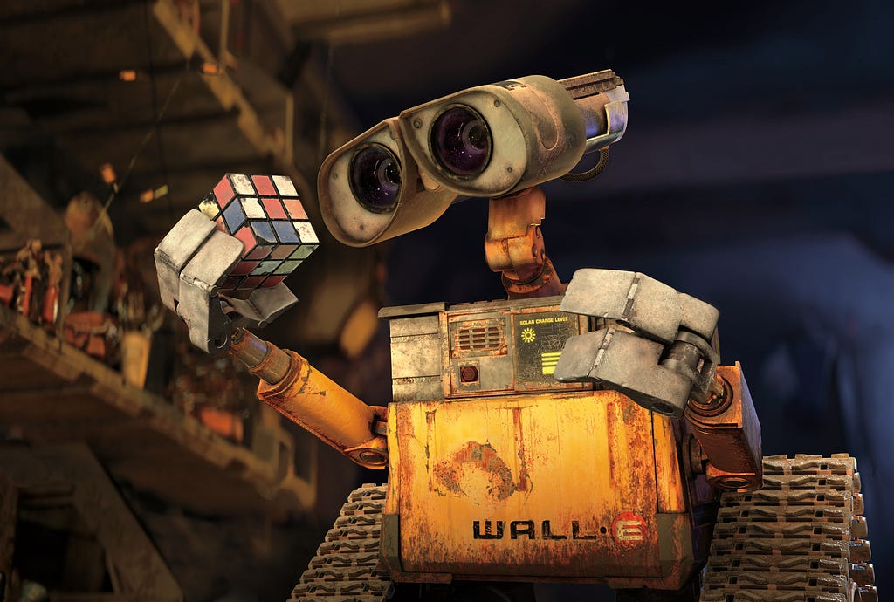
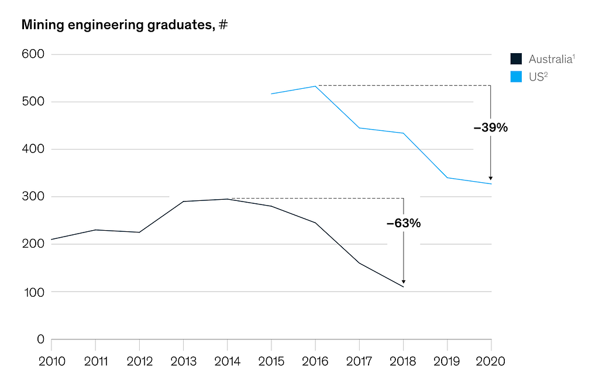
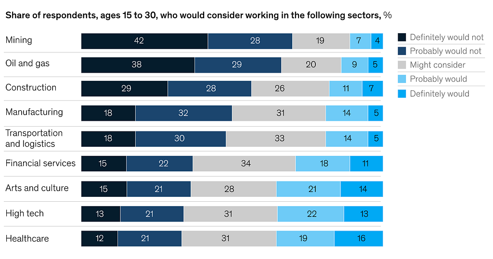

Jul 2025
Autonomous Robot Mining

When I was a kid, I learned about a concept called the Fermi Paradox. It speaks to the fact that the potential number of alien life is overwhelming, yet we see no sign of it. My favourite theory for this paradox is the idea of a great filter, which is ubiquitous to all civilizations at some point, acting as a single point where the fate of a species is determined. It implies that no species has passed this point. Now, I am not about to go on a rant about aliens; instead, I think this theory speaks to where our civilization is at right now. The choices we make over the next couple of decades will dictate how the next millennium will unfold.
Though Earth has been plentiful in resources, a time will come when it will not be able to keep up with our demands. The mining industry supplies 80% of materials for renewable energy, but demand for critical minerals like lithium and cobalt is projected to increase up to 12-fold by 2050, straining finite reserves. Moreover, within the coming 5 years, McKinsey predicts over 50% of the U.S. workforce will retire, paired with an average of 39% drop in US mining graduates. We are reaching our filter, and a change needs to happen.
Our current methods of mining will not keep up with the future.
Why is Mining Important?
The answer might seem obvious, but the real importance often goes understated.
- Economic Backbone: It would not be an exaggeration to say that almost everything that we use in our day-to-day and that enables our modern world to function depends on mining. The device you are using to read this article was made from an assortment of rare earth minerals, mined from every corner of the world.
- Foundation for Green Tech: As our world is moving towards more renewable sources of energy, the minerals that make it possible do not come easily. The demand for critical minerals like lithium, cobalt, and graphite for things such as batteries and wind turbines is projected to increase 12-fold by 2050.
- Food Security: Phosphorus and Potash are mined for fertilizers for agriculture. These ensure our global food supply is consistent and reliable.
Problem: Why won’t today’s mining keep up with the future?
The mining industry faces a critical bottleneck: a shrinking workforce and depleting shallow mineral reserves cannot meet the exponential demand for critical minerals needed for global growth.
Workforce:
Over 50% of the workforce that currently fills the mining industry is predicted to retire within the next decade. Moreover, there has been a 39% drop in mining graduates over the past years. The current labour gap is one of the biggest problems that mining companies are worried about, with BHP and Teck Resources being some of the many companies with labour shortage at the top of their priority list. Just within Canada alone, it is predicted that 80,000 jobs will go unfilled by 2030, driving up costs per the Canadian Mining Journal. Here are the specific jobs that need filling:
- Exploration: Geologists and surveyors are retiring, and fewer graduates are entering the field, slowing the identification of new deposits.
- Extraction: Skilled operators for heavy machinery are in short supply, increasing reliance on automation.
- Processing: Technicians for ore refinement are dwindling, impacting efficiency.
McKinsey indicated in a recent report that the mining industry, where value was derived from commodity prices, ore quality, location, reliability of equipment, and physical assets, has now shifted to workforce and talent. The value a company creates will be based on its workforce.
Traditionally, the value derived from mining companies has been thought about in terms of commodity prices, ore quality, location, equipment, and physical assets. However, talent is increasingly being elevated from a simple enabler to a true value driver. — McKinsey
Why are there fewer people who want to join the workforce? This is a question rooted in our changing times and the traditional structure of the mining workforce. Firstly, for the many mines that are situated in remote areas, many modern infrastructure such as stores, hospitals, roads, and basic facilities are not present. This is especially important in our time, where all these have become basic human commodities. Alongside this, the work is viewed as dangerous and labour-intensive. Even after talent is acquired, it is a field where career progression is limited. Overall, the employee value proposition has significantly declined, and other fields are simply more appealing. Here are the numbers, which also come from the McKinsey report.


Mineral Scarcity:
Although mineral scarcity is not the most pressing issue right now, the next decade will see this issue more present than ever.
The same rare earth minerals we used to find near the surface are running scarce. With the need for these minerals growing at an exponential rate, we are required to start looking deeper into the earth for the same minerals. The paper “Moving towards deep underground mineral resources: Drivers, challenges and potential solutions” notes that deep underground mining is extensively developed due to shallow deposit depletion, with depths often exceeding 500–2,000 meters, as seen in Canada’s Nechalacho mine
In essence, the smaller workforce paired with hard-to-access minerals turns the mining industry into an increasingly costly and time-consuming field. Companies are on their highest alert in an attempt to address these challenges.
What would the business look like?
Offering Robots as a Service (RaaS) is the best way to approach this industry, mitigating the regulatory issues we would have to deal with. In the current market, the only extent of robotics/ AI being used is with hauling trucks, but often, other bottlenecks need to be addressed for these hauling trucks to be used to their maximum potential. We would be aiming to maximize the presence of robotics in mining.
- Robot Sales: Price varies depending on the type of robot.
- Robot Leasing: Price varies depending on the type of robot.
- Software Subscriptions: Software updates, real-time analytics (e.g., ore yield optimization), and integration with other third-party software.
- Maintenance Contracts: Recurring payment per robot for repairs, battery replacements, and on-site technician support.
- Consulting Services: One-time cost for custom integration (e.g., retrofitting a custom fleet to suit niche needs).
How would these robots address modern mining bottlenecks?
Addressing Labour Shortages
Issue: Over 50% of the U.S. mining workforce is expected to retire by 2030, with a 39% decline in mining graduates since 2016. Canada expects 80,000 unfilled jobs over the next 5 years. Specific roles — geologists and surveyors in exploration, skilled operators in extraction, and technicians in processing — are in short supply, threatening project timelines and productivity.
Solutions:
- Exploration: Autonomous drones and ground rovers replace human geologists and surveyors in hazardous or remote terrains. Equipped with LiDAR, ground-penetrating radar, and AI analytics, these robots can map deposits 50–70% faster than manual methods. Remote geologists oversee AI-generated data, reducing on-site staff needs by up to 80%.
- Extraction: The machines involved in extraction, such as diggers, can be extracted from placed by automated robots. Self-driving haul trucks and robotic excavators fill the gap left by retiring operators. For example, Rio Tinto’s autonomous trucks in Australia operate 24/7, increasing productivity by 20% and eliminating the need for human drivers in high-risk zones. AI optimizes digging patterns, reducing operator dependency. Paired with robotic excavators, autonomous trucks can reach peak efficiency. The Robotic excavators and diggers communicate with the haul trucks to create the most efficient methods.
- Processing: Automated sorting systems and robotic arms handle ore refinement, compensating for dwindling technicians. Machine vision and X-ray fluorescence systems, like those used by BHP, improve recovery rates by 10%, automating tasks traditionally requiring skilled labour.
Benefits: Robots fill critical labour gaps, enabling continuous operation without reliance on a shrinking talent pool. The RaaS model allows companies to lease these systems, avoiding the need for in-house robotics expertise, and the consulting services allow companies to tailor the robot for niche needs.
What does Robotic Mining look like?
Going from a potential area to producing ore can be generalized into these stages:
- Exploration: Identifying possible sites and mineral deposits
- Feasibility Study: Taking into consideration the economic, technical and environmental factors to decide if a site is worth pursuing.
- Mine Development: Building the appropriate infrastructure to begin the mining process.
- Extraction: Mining ore out of the ground.
- Processing: Refining the raw ore mined.
Many of these stages can be automated, with appropriate human checks and decision-making. Low-level choices will be made by robots, and high-level choices will be made by humans.
Exploration
The first stage would be exploration, which would also be the stage at which the MVP is developed.
The human portion of this stage will be limited in terms of physical presence. At the beginning of the operation, the robot and other necessary systems will need to be brought into an open area on the site. An all-electric ground robot, fitted for off-road terrain and available for specific environments, will carry out the exploration stage. There will be a home base for the robot to come back to and recharge. The home base will have solar-powered charging stations and on-site generators to ensure robots remain operational in remote locations. The number of robots present will vary based on the area and the timeframe required to be covered.
Feasibility Study
Once data is collected from the exploration stage, a site can be assessed for its potential returns and whether it is profitable to mine. The data will be given AI insights by the robots. This data will be assessed by humans remotely.
Mine Development
Before we can extract, we need to develop the necessary infrastructure for the mining to take place. Depending on the site, the necessary infrastructure will be significantly less due to the smaller number of humans who will be involved. Traditionally, all the sites that are needed to cater to human needs will be rendered unnecessary. This can significantly speed up the timeline. Alongside this, diggers and extraction robots can begin to clear out the necessary areas instead of humans.
Extraction
Robotic excavators, self-driving haul trucks, and driving systems work in tandem to mine ore efficiently. AI optimizes the digging patterns and ensures that robots target more efficient and high-yield zones. These systems operate 24/7 in high-risk or remote environments, eliminating the need for human operators in dangerous conditions. Low-level decisions, such as when to refuel or deposit ore, are handled autonomously by robots, while human supervisors monitor performance and make strategic decisions, preserving accountability.
Processing
Robotic processing can take the form of automated sorting machines to mass spectrometers. All of which will operate more efficiently due to the fact that the ore itself will be less diluted due to more accurate mining by robots.
Next steps with this technology.
The potential with this technology is, frankly, unlimited. This tech can be refactored to fit the needs of agriculture. A similar industry where the next generation workforce is shrinking and demand is growing. Furthermore, if robotic mining is proven effective on Earth, it can be expanded to space, such as the moon or asteroids.
Thank you for reading.